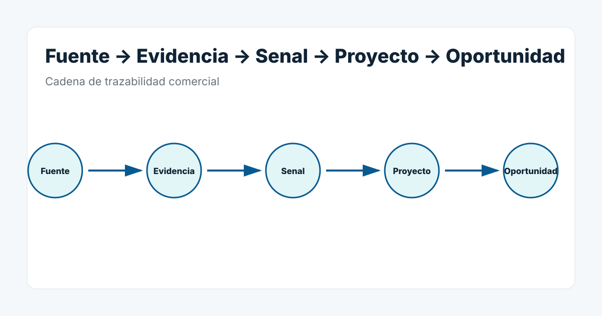

Definicion
Una oportunidad comercial industrial es una situacion donde existen hechos suficientes para justificar una necesidad plausible, una ventana comercial y una siguiente accion.
Por que importa
Ayuda a separar cuentas objetivo de situaciones que merecen accion ahora.
Ejemplo
Una ayuda, un permiso, una contratacion tecnica o una ampliacion pueden cambiar la prioridad comercial cuando estan conectados con una necesidad plausible.
Errores de interpretacion
Confundir una simple empresa objetivo o una noticia con una oportunidad.